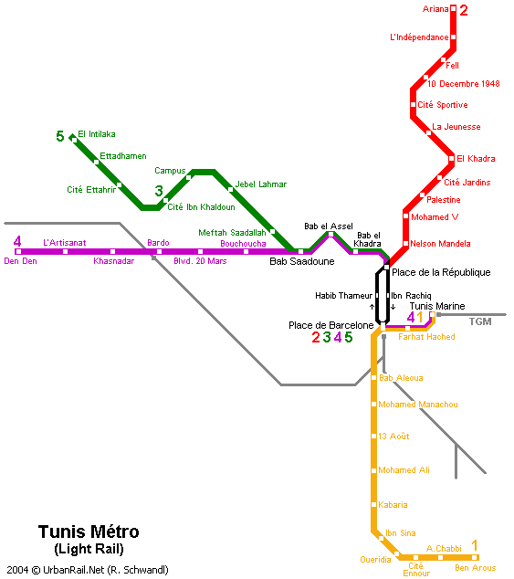

Cette page présente la liste des stations du métro de Tunis :
Ligne 1
- Tunis Marine (correspondance avec le TGM et la ligne 4)
- Farhat Hached
- Place de Barcelone (correspondance avec les lignes 2, 3, 4 et 5)
- Bab Alioua
- Mohamed Manachou
- 13 août
- Mohamed Ali
- Kabaria
- Ibn Sina
- Ouardia 6
- Cité Ennour
- A. Chabbi
- Ben Arous
Lignes 2
- Ariana
- Indépendance
- El Fell
- 10 décembre 1948
- Cité sportive
- La Jeunesse
- Bab El Khadra
- Cité Jardins
- Palestine
- Mohamed V
- Nelson Mandela
- République (correspondance avec les lignes 3, 4 et 5)
- Habib Thameur (du nord vers le sud) ou Ibn Rachiq (du sud vers le nord)
- Place de Barcelone (correspondance avec les lignes 1, 3, 4 et 5)
Lignes 4
- Den Den
- Artisanat
- Khaznadar
- Bardo
- Boulevard du 20 mars
- Bouchoucha
- Bab Saadoun (correspondance avec les lignes 3 et 5)
- Bab Laassal
- Bab El Khadra
- République (correspondance avec les lignes 2, 3 et 5)
- Habib Thameur (du nord vers le sud) ou Ibn Rachiq (du sud vers le nord)
- Place de Barcelone (correspondance avec les lignes 1, 2, 3 et 5)
- Farhat Hached
- Tunis Marine (correspondance avec le TGM et la ligne 1)
Lignes 5
- Place de Barcelone (correspondance avec les lignes 1, 2, 4 et 5)
- Habib Thameur
- République (correspondance avec les lignes 2, 4 et 5)
- Bab El Khadra
- Bab Laassal
- Bab Saadoun
- Mefteh Sâadallah
- Cité Rommana
- Campus
- 7 Novembre
- Les Jasmins
- Ibn Khaldoun
Lignes 6
- Place de Barcelone (correspondance avec les lignes 1, 2, 3 et 4)
- Habib Thameur
- République
- Bab El Khadra
- Bab Laassal
- Bab Saadoun (correspondance avec les lignes 4 et 3)
- Mefteh Sâadallah
- Cité Rommana
- Campus
- 7 Novembre
- Les Jasmins
- Ettahrir
- Omrane Supérieure
- Ettadhamen
- Intilaka
Cartes Du Trafic
